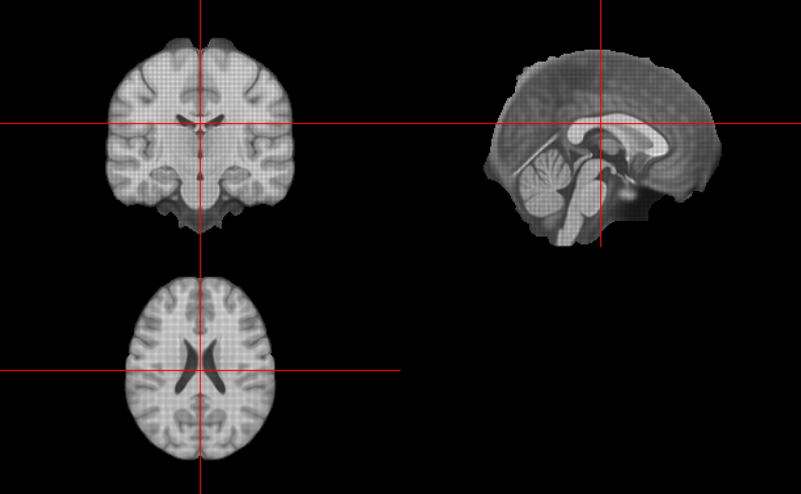
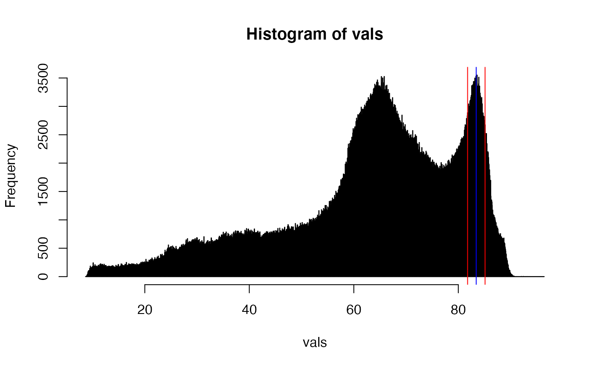
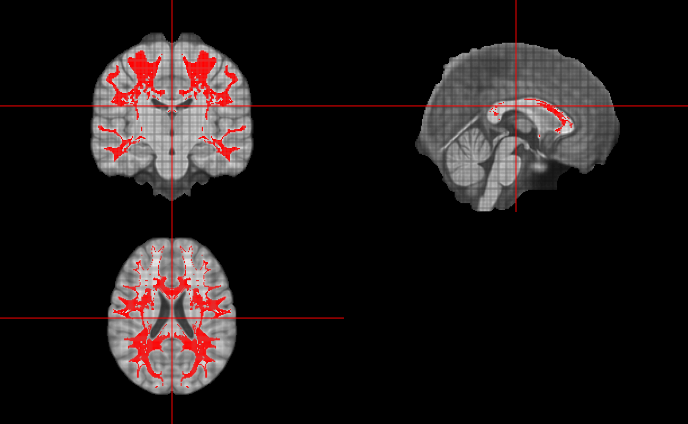

vignettes/Running_WhiteStripe.Rmd
Running_WhiteStripe.RmdFirst, we would like to make sure we have some data to work with. The data is not located directly in the installed package to make it lightweight and some other repository restrictions.
To download the test data, we will use the WhiteStripe function download_img_data:
library(WhiteStripe)
download_img_data()## [1] TRUEOnce the data is downloaded, we can access the files using the ws_img_data function:
files = ws_img_data()We will focus on the T1-weighted image here:
## oro.nifti 0.11.4Here we will display the data in 3-dimensions and note that it is a skull-stripped image:
orthographic(img)
vals = img[img > 0]
hist(vals, breaks = 2000)Here we see the distribution of non-zero values. We use 2000 breaks, as this is the default in whitestripe. For T1 images, whitestripe will use the last mode (intensity around 85) in this data.
Since the image is skull stripped, we will set stripped = TRUE in the whitestripe function:
ws = whitestripe(img = img, type = "T1", stripped = TRUE)## Making Image VOI## Making T1 Histogram## Getting T1 Modes## Smoothing Histogram## Smoothing Derivative## Quantile T1 VOI
names(ws)## [1] "whitestripe.ind" "img.mode" "mask.img"
## [4] "mu.whitestripe" "sig.whitestripe" "img.mode.q"
## [7] "whitestripe" "whitestripe.width" "whitestripe.width.l"
## [10] "whitestripe.width.u" "err"We see the progress points and the names of the output. This returns the indices of the whitestripe and a mask.img element, which is used to normalize the image:
norm = whitestripe_norm(img = img, indices = ws$whitestripe.ind)We can visualize the mode selected and the white stripe:
hist(vals, breaks = 2000)
abline(v = ws$mu.whitestripe, col = "blue")
abline(v = ws$whitestripe, col = "red")
Here we see the blue line for the mode and the red lines for the voxel intensities within the white stripe.
We can also overlay the mask used for the white stripe:
mask = ws$mask.img
mask[mask == 0] = NA
orthographic(x = img, y = mask, col.y = "red")
We see white matter selected, but the fact that more values within the posterior compared to the anterior part of the brain may indicate a inhomogeneity correction needs to be applied before running whitestripe.